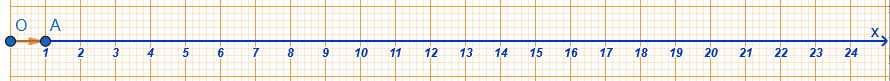
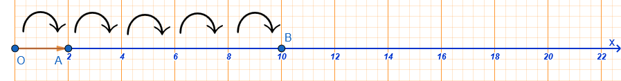

1 Φυσικοί Αριθμοί
1.1 Κατανόηση των Φυσικών Αριθμών
Θεωρία & Ορισμοί
Ορισμός: Οι αριθμοί \(0, 1, 2, 3, 4, \dots\) που χρησιμοποιούνται για την απαρίθμηση αντικειμένων ονομάζονται φυσικοί αριθμοί. Το σύνολό τους συμβολίζεται με το γράμμα \(\mathbb{N}\).
Διαδοχικότητα: Κάθε φυσικός αριθμός έχει έναν επόμενο (\(\nu+1\)) και έναν προηγούμενο (\(\nu-1\)), εκτός από το \(0\) που έχει μόνο επόμενο (το \(1\)). Δύο αριθμοί που διαφέρουν κατά μία μονάδα λέγονται διαδοχικοί.
Άρτιοι & Περιττοί: Οι φυσικοί που διαιρούνται με το \(2\) λέγονται άρτιοι (λήγουν σε \(0, 2, 4, 6, 8\)), ενώ εκείνοι που δεν διαιρούνται λέγονται περιττοί (λήγουν σε \(1, 3, 5, 7, 9\)).
Αξία Θέσης: Στο δεκαδικό σύστημα, η αξία ενός ψηφίου καθορίζεται από τη θέση του (μονάδες, δεκάδες, εκατοντάδες κ.λπ.).
Παραδείγματα
- Για τον αριθμό \(N = 6\) (άρτιος), ο προηγούμενος είναι ο \(5\) (περιττός) και ο επόμενος ο \(7\) (περιττός).
- Ο αριθμός \(455\) είναι περιττός γιατί διαιρούμενος με το \(2\) αφήνει υπόλοιπο \(1\) (\(455 = 227 \cdot 2 + 1\)).
- Στον αριθμό \(34.720\), το ψηφίο \(4\) βρίσκεται στις χιλιάδες, άρα η αξία του είναι \(4.000\).
Ασκήσεις
- Γράψτε με ψηφία τους αριθμούς: (α) διακόσια πέντε, (β) είκοσι χιλιάδες οκτακόσια δεκάτρία.
- Ποιοι είναι οι τρεις προηγούμενοι και οι δύο επόμενοι του αριθμού \(289\);.
- Χαρακτηρίστε ως άρτιους ή περιττούν τους αριθμούς: \(233, 8.455, 332, 12, 0\).
- Βρείτε πόσοι φυσικοί αριθμοί περιλαμβάνονται ανάμεσα στο \(5\) και το \(500\).
- Αναλύστε τον αριθμό \(123.654\) ως προς την αξία κάθε θέσης των ψηφίων του.
- Αν ο \(N\) είναι περιττός, τι είδους αριθμός είναι ο \(N+1\);.
- Πόσες δεκάδες και πόσες εκατοντάδες έχει ο αριθμός \(567.532\);.
- Σχηματίστε όλους τους δυνατούς τριψήφιους αριθμούς χρησιμοποιώντας μία φορά τα ψηφία \(5, 6, 7\).
1.2 Αντιστοίχιση Φυσικών Αριθμών με Σημεία του Άξονα
Θεωρία & Ορισμοί
Ορισμός Άξονα: Για να παραστήσουμε τους φυσικούς αριθμούς γεωμετρικά, χρησιμοποιούμε μια ευθεία (ή ημιευθεία).
Κατασκευή: Ορίζουμε ένα σημείο \(O\) ως αρχή που αντιστοιχεί στο \(0\). Δεξιά του επιλέγουμε ένα σημείο \(A\) που αντιστοιχεί στο \(1\). Το τμήμα \(OA\) ονομάζεται μονάδα μέτρησης.
Τετμημένη: Ο αριθμός που αντιστοιχεί σε ένα σημείο του άξονα ονομάζεται τετμημένη του σημείου αυτού.
Διάταξη: Οι φυσικοί αριθμοί τοποθετούνται κατά σειρά αυξανόμενου μεγέθους προς τα δεξιά.

Παραδείγματα
- Αν η μονάδα \(OA\) είναι \(2\) cm, τότε το σημείο που απέχει \(10\) cm από το \(O\) αντιστοιχεί στον αριθμό \(5\) (\(10 : 2 = 5\)).

- Σε έναν άξονα, ο αριθμός \(35\) βρίσκεται ακριβώς στη μέση του τμήματος που ενώνει το \(30\) και το \(40\).
- Το σημείο \(M(2)\) στον άξονα απέχει από την αρχή \(O\) δύο φορές την απόσταση \(OA\).
Ασκήσεις
- Κατασκευάστε άξονα με μονάδα \(OA = 1\) cm και τοποθετήστε τους αριθμούς \(3, 5, 8\).
- Αν στον άξονα η μονάδα \(OA\) είναι \(3\) cm, ποιος αριθμός αντιστοιχεί σε σημείο που απέχει \(18\) cm από το \(O\);.
- Σχεδιάστε έναν άξονα και τοποθετήστε τα σημεία \(B, \Gamma, \Delta\) σε αποστάσεις \(6, 10\) και \(14\) μονάδων από την αρχή.
- Βρείτε τη μέση απόσταση ανάμεσα στους αριθμούς \(10\) και \(20\) πάνω στον άξονα.
- Σημειώστε στον άξονα τους αριθμούς που αντιστοιχούν στην αξία των χαρτονομισμάτων των \(5, 10, 20\) και \(50\) ευρώ.
- Ποιος φυσικός αριθμός βρίσκεται στον άξονα ανάμεσα στο \(2,3\) και το \(3,8\);.
- Αν ένα σημείο \(K\) έχει τετμημένη \(4\), ποια είναι η απόστασή του από το σημείο \(M\) με τετμημένη \(9\);.
- Σε έναν άξονα με μονάδα \(2\) cm, βρείτε την απόσταση μεταξύ των σημείων \(3\) και \(7\).
1.3 Σύγκριση Φυσικών Αριθμών
Θεωρία & Ορισμοί
Σύμβολα: Χρησιμοποιούμε τα σύμβολα \(=\) (ίσο), \(<\) (μικρότερο) και \(>\) (μεγαλύτερο).
Κανόνας 1: Αν δύο αριθμοί έχουν διαφορετικό πλήθος ψηφίων, μεγαλύτερος είναι αυτός με τα περισσότερα ψηφία.
Κανόνας 2: Αν έχουν ίδιο πλήθος ψηφίων, συγκρίνουμε τα ψηφία τους από αριστερά προς τα δεξιά, μέχρι να βρούμε τα πρώτα που διαφέρουν.
Σειρά: Η κατάταξη από τον μικρότερο στον μεγαλύτερο λέγεται αύξουσα, ενώ από τον μεγαλύτερο στον μικρότερο φθίνουσα.
Η διάταξη επιτρέπει τη σύγκριση οποιωνδήποτε δύο φυσικών αριθμών βάσει των παρακάτω κανόνων:
Αρχή της Τριχοτομίας: Για κάθε ζεύγος αριθμών \(n, m\), ισχύει ακριβώς μία από τις σχέσεις: \(n = m\), \(n < m\) ή \(n > m\).
Ορισμός Ανισότητας: Ο \(m\) είναι μικρότερος του \(n\) (\(m < n\)) αν υπάρχει ένας φυσικός αριθμός \(k \neq 0\) τέτοιος ώστε \(n = m + k\).
Μεταβατική Ιδιότητα: Αν \(n < m\) και \(m < k\), τότε \(n < k\).
Αντισυμμετρική Ιδιότητα: Αν \(m \le n\) και \(n \le m\), τότε αναγκαστικά \(m = n\).
Παραδείγματα
- \(52.874 > 9.873\) γιατί ο πρώτος έχει \(5\) ψηφία ενώ ο δεύτερος \(4\).
- \(10.100 > 10.010\) γιατί στην τάξη των εκατοντάδων το \(1\) είναι μεγαλύτερο από το \(0\).
- \(3.508 < 3.515\) γιατί στην τάξη των μονάδων το \(8\) είναι μικρότερο από το \(15\) (εξετάζοντας τις τελευταίες τάξεις).
- Να τοποθετηθούν σε αύξουσα σειρά οι αριθμοί: \(3.515, 4.800, 3.620, 3.508, 4.801\).
- Λύση: Συγκρίνουμε τις χιλιάδες και μετά τις εκατοντάδες: \(3.508 < 3.515 < 3.620 < 4.800 < 4.801\).
Ασκήσεις
- Τοποθετήστε το σύμβολο \(<\) ή \(>\): (α) \(38 \dots 36\), (β) \(456 \dots 465\), (γ) \(8.765 \dots 8.970\).
- Διατάξτε σε αύξουσα σειρά τους αριθμούς: \(3.515, 4.800, 3.620, 3.508, 4.801\).
- Διατάξτε σε φθίνουσα σειρά τους αριθμούς: \(5.678, 8.765, 5.687, 7.685\).
- Συγκρίνετε τους αριθμούς \(789\) και \(987\) εξηγώντας τον κανόνα που χρησιμοποιήσατε.
- Ποιος είναι ο μικρότερος τετραψήφιος φυσικός αριθμός και ποιος ο μεγαλύτερος τριψήφιος;.
- Αν \(a < \beta\) και \(\beta < \gamma\), τι συμπέρασμα βγάζετε για τη σχέση του \(a\) με το \(\gamma\);.
- Συγκρίνετε τα αποτελέσματα των παραστάσεων: \(3+6\) και \(6+3\).
- Βρείτε έναν φυσικό αριθμό \(x\) τέτοιον ώστε \(23 < x < 25\).
1.4 Στρογγυλοποίηση Φυσικών Αριθμών
Θεωρία & Ορισμοί
Ορισμός: Είναι η αντικατάσταση ενός αριθμού με μια προσέγγιση (δεκάδας, εκατοντάδας κ.λπ.) για ευκολότερη χρήση.
Κανόνας:
- Προσδιορίζουμε την τάξη στρογγυλοποίησης.
- Εξετάζουμε το ψηφίο στα δεξιά της:
- Αν είναι \(0, 1, 2, 3\) ή \(4\), το ψηφίο της τάξης παραμένει ίδιο και τα δεξιά μηδενίζονται.
- Αν είναι \(5, 6, 7, 8\) ή \(9\), το ψηφίο της τάξης αυξάνεται κατά \(1\) και τα δεξιά μηδενίζονται.
Εξαιρέσεις: Δεν στρογγυλοποιούμε αριθμούς που δηλώνουν ταυτότητα (τηλέφωνα, ΑΔΤ, κωδικούς).
Παραδείγματα
- Ο αριθμός \(13.637\) στις εκατοντάδες:
Το δεξί ψηφίο είναι \(3 < 5\), άρα γίνεται \(13.600\).
- Ο αριθμός \(13.637\) στις χιλιάδες:
Το δεξί ψηφίο (εκατοντάδες) είναι \(6 > 5\), άρα το \(3\) γίνεται \(4\) και προκύπτει \(14.000\).
- Ο αριθμός \(9.573.842\) στα εκατομμύρια:
Το δεξί ψηφίο είναι \(5 = 5\), άρα το \(9\) αυξάνεται κατά \(1\) και γίνεται \(10.000.000\).
- Στρογγυλοποιήστε τον \(1.658\) στις εκατοντάδες.
- Λύση: Το ψηφίο των δεκάδων είναι \(5\), άρα οι εκατοντάδες αυξάνονται: \(1.700\).
Ασκήσεις
- Στρογγυλοποιήστε στην πλησιέστερη εκατοντάδα τους αριθμούς: \(345, 761, 2.567, 9.532\).
- Στρογγυλοποιήστε τον αριθμό \(7.568.349\) στις χιλιάδες και στις δεκάδες χιλιάδες.
- Σε ποιους από τους αριθμούς επιτρέπεται η στρογγυλοποίηση: (α) Αριθμός Ταυτότητας, (β) Βάρος αυτοκινήτου, (γ) Τηλέφωνο.
- Υπολογίστε πρόχειρα (με στρογγυλοποίηση δεκάδας) αν \(1.000\)€ αρκούν για αγορές αξίας \(156, 30, 38, 369\) και \(432\)€.
- Στρογγυλοποιήστε τον αριθμό \(202.987\) στις εκατοντάδες. Ποιο είναι το αποτέλεσμα;.
- Ποιο ψηφίο πρέπει να μπει στο τέλος του \(83\_\) ώστε αν στρογγυλοποιηθεί στη δεκάδα να γίνει \(830\) και ο αριθμός να είναι άρτιος;.
- Στρογγυλοποιήστε την απόσταση Γης - Σελήνης (\(384.394\) km) στην πλησιέστερη χιλιάδα.
- Προσδιορίστε το ψηφίο των δεκάδων στον αριθμό \(25,\_7\) αν γνωρίζετε ότι στρογγυλοποιούμενο στο δέκατο γίνεται \(25,5\).
Λυμένη Άσκηση: Διαιρείται ο \(123.456\) με το \(3\);
* Λύση: \(1+2+3+4+5+6 = 21\). Το \(21\) διαιρείται με το \(3\), άρα και ο αριθμός διαιρείται.
Άλυτες Ασκήσεις:
Συμπληρώστε το κενό στον αριθμό \(6.21\_\) ώστε να διαιρείται με το \(9\).
Ποιοι αριθμοί μεταξύ \(270\) και \(294\) διαιρούνται ταυτόχρονα με \(2, 5\) και \(10\);
1.5 Πρώτοι Αριθμοί και Ανάλυση σε Πρώτους Παράγοντες
Θεωρία:
* Πρώτος είναι ο αριθμός που έχει διαιρέτες μόνο το \(1\) και τον εαυτό του. Το \(1\) δεν είναι πρώτος.
* Σύνθετος είναι ο αριθμός που έχει και άλλους διαιρέτες.
* Ανάλυση: Κάθε σύνθετος αριθμός γράφεται ως γινόμενο πρώτων παραγόντων.
Λυμένη Άσκηση: Αναλύστε τον \(840\) σε γινόμενο πρώτων παραγόντων.
* Λύση: \(840 = 2^3 \cdot 3 \cdot 5 \cdot 7\).
Άλυτες Ασκήσεις:
Αναλύστε τους αριθμούς \(336\) και \(4.080\) σε πρώτους παράγοντες.
Είναι το γινόμενο δύο πρώτων αριθμών πρώτος ή σύνθετος;
1.6 ΜΚΔ και ΕΚΠ
Θεωρία:
* Μέγιστος Κοινός Διαιρέτης (ΜΚΔ): Ο μεγαλύτερος από τους κοινούς διαιρέτες. Βρίσκεται παίρνοντας τους κοινούς πρώτους παράγοντες με τον μικρότερο εκθέτη.
* Ελάχιστο Κοινό Πολλαπλάσιο (ΕΚΠ): Το μικρότερο από τα κοινά πολλαπλάσια. Βρίσκεται παίρνοντας κοινούς και μη κοινούς παράγοντες με τον μεγαλύτερο εκθέτη.
* Πρώτοι μεταξύ τους: Όταν ο ΜΚΔ τους είναι \(1\).
Λυμένη Άσκηση: Βρείτε ΜΚΔ και ΕΚΠ των \(16, 24\).
* Λύση: \(16 = 2^4\) και \(24 = 2^3 \cdot 3\). ΜΚΔ\((16, 24) = 2^3 = 8\). ΕΚΠ\((16, 24) = 2^4 \cdot 3 = 48\).
Άλυτες Ασκήσεις:
Βρείτε το ΕΚΠ των αριθμών \(12, 16, 18\).
Ένας ανθοπώλης έχει \(36\) τριαντάφυλλα, \(30\) γαρύφαλλα και \(48\) γαρδένιες. Πόσες το πολύ όμοιες ανθοδέσμες μπορεί να φτιάξει;
1.7 Ακολουθούν επιπλέον παραδείγματα, λυμένες και άλυτες ασκήσεις:
- \(1.254\): Διαιρείται με το \(2\) γιατί λήγει σε \(4\) και με το \(3\) γιατί \(1+2+5+4 = 12\) (\(12/3=4\)).
- \(17.375\): Διαιρείται με το \(25\) γιατί τα δύο τελευταία ψηφία του (\(75\)) διαιρούνται με το \(25\).
- \(33.471\): Διαιρείται με το \(9\) γιατί το άθροισμα \(3+3+4+7+1 = 18\) διαιρείται με το \(9\).
- Διαιρείται ο \(123.456\) με το \(3\);
- Λύση: \(1+2+3+4+5+6 = 21\).
Το \(21\) διαιρείται με το \(3\), άρα και ο αριθμός διαιρείται.
- Συμπληρώστε το κενό στον αριθμό \(6\_4\) ώστε να διαιρείται με το \(9\).
- Λύση: \(6 + 4 = 10\).
Ο πλησιέστερος αριθμός που διαιρείται με το \(9\) είναι το \(18\).
Άρα \(18 - 10 = 8\).
Ο αριθμός είναι \(684\).
- Είναι ο \(678\) διαιρετός από το \(6\);
- Λύση: Ναι, γιατί είναι άρτιος (διαιρείται με το \(2\)) και το άθροισμα των ψηφίων του \(6+7+8 = 21\) διαιρείται με το \(3\).
Συμπληρώστε το κενό στον αριθμό \(7.92\_\) ώστε να διαιρείται ταυτόχρονα με \(5, 9\) και \(10\).
Ποιοι αριθμοί μεταξύ \(270\) και \(294\) διαιρούνται ακριβώς με \(2, 5\) και \(10\) ταυτόχρονα;.
Βρείτε τον μικρότερο τριψήφιο αριθμό που διαιρείται με το \(3\) και το \(5\).
- \(60 = 2^2 \cdot 3 \cdot 5\).
- \(1.188 = 2^2 \cdot 3^3 \cdot 11\).
- \(2.520 = 2^3 \cdot 3^2 \cdot 5 \cdot 7\).
Αναλύστε τον \(840\) σε γινόμενο πρώτων παραγόντων.
- Λύση: \(840 = 2^3 \cdot 3 \cdot 5 \cdot 7\).
- Αναλύστε τον \(78\) σε γινόμενο πρώτων παραγόντων.
- Λύση: \(78 = 2 \cdot 3 \cdot 13\).
- Αναλύστε τον \(348\) σε γινόμενο πρώτων παραγόντων.
- Λύση: \(348 = 2^2 \cdot 3 \cdot 29\).
Αναλύστε τους αριθμούς \(315, 336\) και \(4.080\) σε γινόμενο πρώτων παραγόντων.
Αναλύστε τους αριθμούς \(1.210\) και \(2.344\) σε γινόμενο πρώτων παραγόντων.
Αναλύστε τον αριθμό \(4.725\) σε γινόμενο πρώτων παραγόντων.
- ΜΚΔ\((12, 18) = 6\): Ο μεγαλύτερος κοινός διαιρέτης.
- ΜΚΔ\((3, 8) = 1\): Οι αριθμοί ονομάζονται πρώτοι μεταξύ τους.
- ΜΚΔ\((8, 12, 24) = 4\): Ο μεγαλύτερος διαιρέτης που τους διαιρεί όλους.
Βρείτε τον ΜΚΔ\((32, 56, 72)\).
- Λύση: \(\Delta_{32}=\{1,2,4,8,16,32\}\),
\(\Delta_{56}=\{1,2,4,7,8,\dots\}\),
\(\Delta_{72}=\{1,2,3,4,6,8,\dots\}\).
ΜΚΔ\(= 8\).
- Αν έχουμε \(64\) γυναίκες, \(52\) άνδρες και \(120\) παιδιά, σε πόσες το πολύ ομάδες μπορούν να μοιραστούν ομοιόμορφα;
- Λύση: ΜΚΔ\((64, 52, 120) = 4\) ομάδες.
- Βρείτε τον ΜΚΔ των \(16, 24\).
- Λύση: \(16 = 2^4\) και \(24 = 2^3 \cdot 3\).
ΜΚΔ\(= 2^3 = 8\).
Βρείτε τον ΜΚΔ\((3.240, 3.024, 1.440)\).
Ένας ανθοπώλης έχει \(36\) τριαντάφυλλα, \(30\) γαρύφαλλα και \(48\) γαρδένιες. Πόσες το πολύ όμοιες ανθοδέσμες μπορεί να φτιάξει;.
Βρείτε τον ΜΚΔ\((15, 20, 25)\).
- ΕΚΠ\((3, 4) = 12\): Το μικρότερο κοινό πολλαπλάσιο.
- ΕΚΠ\((5, 8) = 40\): Επειδή ο ΜΚΔ είναι \(1\), το ΕΚΠ είναι το γινόμενό τους.
- ΕΚΠ\((2, 3) = 6\): Το μικρότερο πολλαπλάσιο (εκτός του μηδενός).
Βρείτε το ΕΚΠ\((15, 27)\).
- Λύση: \(15 = 3 \cdot 5\) και \(27 = 3^3\).
ΕΚΠ\(= 3^3 \cdot 5 = 27 \cdot 5 = 135\).
- Βρείτε το ΕΚΠ\((16, 24)\).
- Λύση: \(16 = 2^4\) και \(24 = 2^3 \cdot 3\).
ΕΚΠ\(= 2^4 \cdot 3 = 16 \cdot 3 = 48\).
- Τρεις εταιρείες βγάζουν νέα μοντέλα κάθε \(2, 3\) και \(5\) χρόνια αντίστοιχα. Αν έβγαλαν μαζί το \(2001\), πότε θα ξαναβγάλουν μαζί;
- Λύση: ΕΚΠ\((2, 3, 5) = 30\).
Το επόμενο έτος θα είναι το \(2001 + 30 = 2031\).
Βρείτε το ΕΚΠ\((12, 16, 18)\).
Τρεις εργαζόμενοι κάνουν βάρδια κάθε \(10, 4\) και \(3\) ημέρες. Αν ξεκίνησαν μαζί σήμερα, μετά από πόσες μέρες θα ξανασυναντηθούν;.
Βρείτε το ΕΚΠ\((16, 18, 24)\).
1.8 Ασκήσεις
Ποια θέση καταλαμβάνει το ψηφίο \(7\) στον αριθμό \(1.753.856\);
Ποιοι φυσικοί είναι ταυτόχρονα μεγαλύτεροι του \(13\) και μικρότεροι ή ίσοι του \(21\);
Στρογγυλοποιήστε τον \(8.753 .654\) στις χιλιάδες.
Ποιοι διψήφιοι αριθμοί στρογγυλοποιούνται στο \(100\);